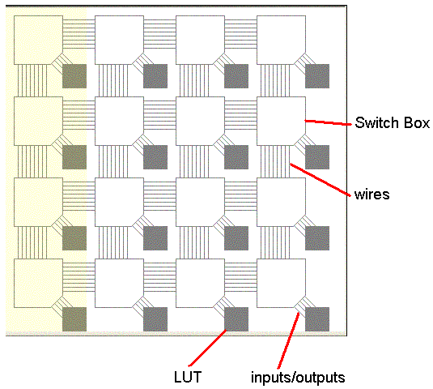
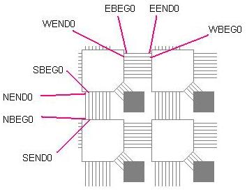

set <row> <column> <resource> <value>
The first word is the command name - set. The remaining arguments are the parameters
of the command. The first two parameters take the CLB row and CLB column
of the device where the resource is located. The resource is the name of
the configurable
resource (e.g. a routing mux, an input mux, or a LUT) that is to be set. The value is
the value that the resource should be set to. For a LUT, the value
must be a 16 character string representing the contents of the 4 input LUT
(i.e. it can use the characters 0 or 1). Note that the string is unquoted. For
a mux the value will be the name of the resource that the mux will select
(i.e. for a NBEG0 resource with a NEND0 value means that the mux that drives
the NBEG0 resource will select NEND0). For example:
set 2 2 NBEG0 NEND0
When the design is complete, clicking the ok button will bring back the
graphical view of the FPGA. The FPGA now shows the design that was just entered.
The blue coloring indicate resources that are in use.
Note: resource names are case sensitive.
After the design was entered, the text field labeled "Care bit ratio" was filled in. This represents the number of bits used in the particular design as a fraction of the total bits in the configuration bitstream. This is commonly low in FPGAs due to a lot of resources being unused. Next, the probability of a SEU occurring is to be entered in the "SEU Prob" text field. The SEU probability must lie between 0 and 1. The probability differs depending on various environmental factors. The most common one is exposure to radiation - in space SEUs are more probable than at the top of a mountain, which in turn has a higher SEU rate than at sea level. When that is filled in, the "Prob{Impact}" field will then show the probability that a SEU will affect the design. This is simply the care bit ratio times the SEU probability.
There are three pieces of information that need to be filled out in order to proceed to the simulation. The first field is the readback time. Recall that the SEU is detected by continually performing readbacks on each of the frames in the FPGA and comparing the CRC against a known good CRC value. The time it takes to readback is to be entered in the "Readback time" text field. The time has no fixed time unit and can be interpreted by the user - typically it is microseconds. Note that all of the time fields should be whole numbers. Any fraction will be ignored.
The second property to be entered is the reconfiguration time. This is the time it takes, once an upset is detected, to fix the problem. Recall that it is fixed by reconfiguring the frame with a known good configuration which is stored in, for example, a PROM. Like the readback time, the value entered in the "Reconfig. time" does not have a time unit associated with it.
The next property is about the SEU - 4 fields. The first field "time" is the time when the upset occurs. The row and column, entered in the "row" and "col" text fields respectively, determine the CLB where the affected bit is located. The bit, set with the "bit" text field, is within that CLB which bit is affected. As seen in the Architecture Guide below, the row must lie between 0 and 3, the column between 0 and 3, and the bit between 0 and 83. Note that while the time of the SEU is in the same time unit as the readback and reconfiguration times, this is only to simplify the simulation. In reality the SEU would more likely be on a several orders of magnitude longer scale (i.e. days instead of microseconds).
Finally, there is a check box labeled "find SEU bit". There are two possible ways to handle an error. The first way is to detect the error, and always reconfigure the frame. In this case, the application can tolerate temporary faults and there is no need to recover. For example, in a telephone switch if a few milliseconds of audio are lost the conversation will hardly be affected. Alternately, some applications, such as lossless compression, may require the operation performed completely without any errors. In this case, a rollback to a checkpoint is required on faults. To minimize the number of rollbacks required and to take advantage of the low care bit ratio, the second way to handle an error is to check the readback bitstream against the known good bitstream and determine if the bit was part of the design. This has the advantage that it can be detected if there is a need to recover from the error or simply fix the error and continue operating. Fixing errors that do not affect the design is still necessary since the error detection is not guaranteed to find multiple errors. Checking the check box will perform the check to determine if the SEU was part of the design or not. It will print out a message detailing the findings.
Once all of the fields are filled in, the simulation is ready to be run. Clicking the "start simulation" button will prepare the system for simulation. It downloads the design to the virtual FPGA, performs validation of the input fields, and other initialization. The simulation can then be stepped with the "step" button. Stepping performs advances in time based on significant events (i.e. it is not necessarily a regular time interval). The significant events are a readback with CRC check, an upset as set by the user in the text fields, and a reconfiguration when an upset is detected.
The yellow highlighted column represents the current column that the CRC checker is working on. When an upset occurs, the affected resource will turn red. After the CRC checker detects the error and the reconfiguration fixes the upset the resource will turn back to its original color (blue if used, gray if not).
After an upset occurs and has been fixed a second SEU can be added to the simulation. Pressing the "pause" button will pause the simulation and allow the user to enter in a new SEU in the SEU time, row, col, and bit text fields. Note that the time must be greater than the current time. To go back to the simulation, press the "unpause" button (which is the same button as the pause button).
The example FPGA is a 4 by 4 array of configurable logic blocks (CLB) with the bottom left being (row=0, col=0). Each CLB has a lookup table (LUT), inputs and outputs to the LUT, wires connecting to other CLBS, and a switch box for connecting wires. The diagram below marks the different features of the FPGA.

The LUT is a four input, one output lookup table. It can implement any function and therefore requires sixteen configuration bits to describe the functionality. The inputs are named IN0, IN1, IN2, IN3. The output is named OUT. The LUT resource is named LUT.
There is are four vertical channels of wires. Each channel has four wires in each of the two directions - North and South (i.e. the total channel is 8 wide). Likewise, there are four horizontal channels of wires with four wires in each of the two directions - East, and West. The wires are all single length, which means they span one CLB and need to be connected to another wire in the next switch box. The wires are unidirectional, which means they can only be driven from one end. Within the channel they alternate in direction. For example, looking at a horizontal channel the top wire flows in the east direction and is indexed as the 0th wire. The wire below that flows in the west direction and is also indexed 0. The wire below that flows in the east direction and is indexed 1. The trend continues for the entire channel. The part of the wire that is an input to the switch box is labeled the end of the wire. The part of the wire that is an output of the switch box is labeled the beginning. In the vertical direction, the left most wire flows in the north direction and is indexed as the 0th wire. The diagram below shows a graphical representation. To summarize the naming convention, there are three parts to a name. The first is a one letter representation of the direction. N for north, S for south, E for East, and W for west. The second part represents which end of the wire is being referred to - BEG for the beginning, END for the end. The last part is the index of the wire within the channels - from 0 to 3.

The connectivity between wires occurs in the switch box. Recall that only BEG wires (e.g. NBEG3) and the LUT inputs can be driven. They can only be driven by END wires (e.g. NEND3) and the LUT output. Each wire can be driven by wires with the same index that are not on the same side of the switch box. For example NBEG2 can be driven by NEND2, WEND2, and EEND2. Notice that it cannot be driven by SEND2 since they are on the same side of the switch box. Additionally every wire can be driven by the LUT output. The inputs to the LUT can be driven by any END wire and not the LUT output. That is there is a 16 input mux for each of the LUT inputs and a 4 input mux for each of the routing resources.
The bitstream is organized into frames. Each frame is the configuration
data for a single column of CLBs. In a real FPGA there would be several
frames per column of CLBs. Within each frame there are four groups of
bits for the four CLBs in the column. Each CLB configuration data has
the same structure. Within the frame the most significant bit is the
most significant bit of row 0. The least significant bit is the least
significant bit of row 3. Within the CLB, the configuration data is
organized as follows (most significant bits listed first):
NBEG0 - 3 bits representing the configuration of the mux (4 inputs plus
an OFF value).
NBEG1 - 3 bits representing the configuration of the mux (4 inputs plus
an OFF value).
NBEG2 - 3 bits representing the configuration of the mux (4 inputs plus
an OFF value).
NBEG3 - 3 bits representing the configuration of the mux (4 inputs plus
an OFF value).
SBEG0 - 3 bits representing the configuration of the mux (4 inputs plus
an OFF value).
SBEG1 - 3 bits representing the configuration of the mux (4 inputs plus
an OFF value).
SBEG2 - 3 bits representing the configuration of the mux (4 inputs plus
an OFF value).
SBEG3 - 3 bits representing the configuration of the mux (4 inputs plus
an OFF value).
EBEG0 - 3 bits representing the configuration of the mux (4 inputs plus
an OFF value).
EBEG1 - 3 bits representing the configuration of the mux (4 inputs plus
an OFF value).
EBEG2 - 3 bits representing the configuration of the mux (4 inputs plus
an OFF value).
EBEG3 - 3 bits representing the configuration of the mux (4 inputs plus
an OFF value).
WBEG0 - 3 bits representing the configuration of the mux (4 inputs plus
an OFF value).
WBEG1 - 3 bits representing the configuration of the mux (4 inputs plus
an OFF value).
WBEG2 - 3 bits representing the configuration of the mux (4 inputs plus
an OFF value).
WBEG3 - 3 bits representing the configuration of the mux (4 inputs plus
an OFF value).
IN0 - 5 bits representing the configuration of the mux (16 inputs plus an
OFF value).
IN1 - 5 bits representing the configuration of the mux (16 inputs plus
an OFF value).
IN2 - 5 bits representing the configuration of the mux (16 inputs plus an
OFF value).
IN3 - 5 bits representing the configuration of the mux (16 inputs plus
an OFF value).
LUT - 16 bits representing the configuration of the LUT.
Upon readback, a 16 bit cyclic redundancy check (CRC) calculation is performed.
The generator polynomial is:
CRC-16 = X16 + X15 + X2 + 1
The configuration data is shifted in with the least significant bit first as shown in the figure below.